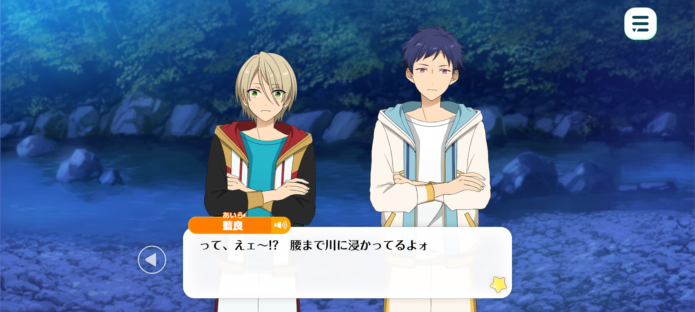
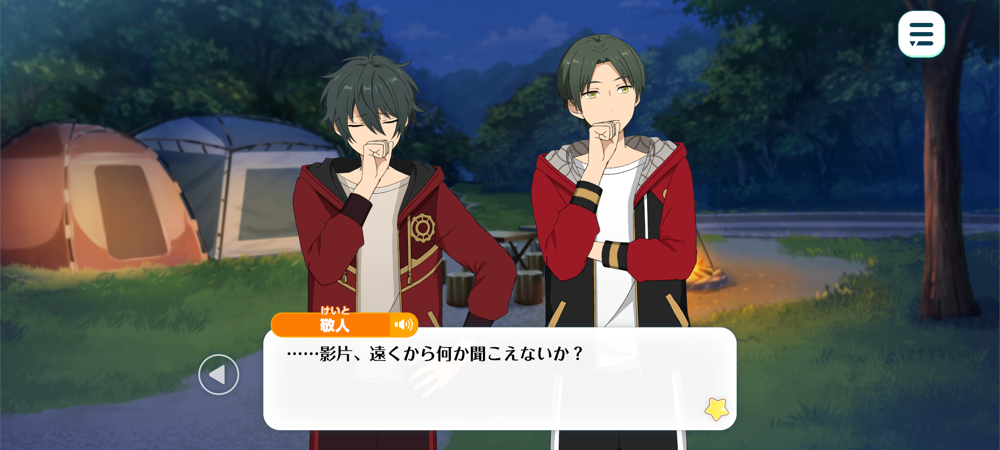
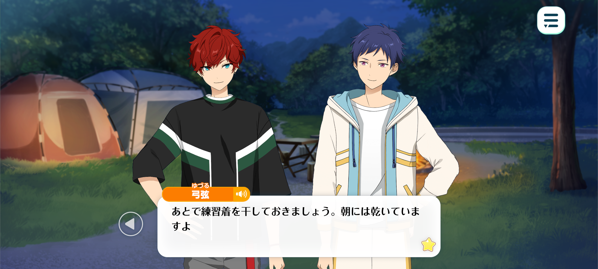
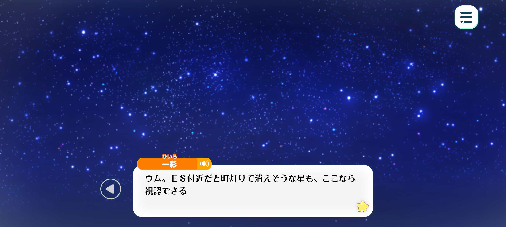

Scout! Keito Lecture
Summer Foam – Chapter 6



Yuzuru: …I’ve found Hiiro-sama. He’s over there.
Aira: Really!? Just as you'd expect, Fushimi-senpai has—
—Ehhh~!? He's up to his waist in water!
Oii~! Hiro-kuuun! Come back! It's too dark! You're not going to find them now!
It's dangerous! Hiro-kuuun!
Hiiro: …
Aira: He's ignoring me…! Can you hear me? Hellooo, Hiro-kun!
Hiiro: …
Yuzuru: (…I don't believe he's ignoring us. The noise of the river must be drowning out our voices.)
(As Shiratori-sama rightly pointed out, the river is dangerous at night. According to the information I gathered beforehand, it can reach depths of up to three metres.)
(I should bring him back to shore, even if I have to do so by force. Perhaps I could borrow a rope from the campsite office…)
Hiiro: —There they are.
Aira: H-Hiro-kun!?
What is he doing!? He just disappeared under the water…!
Yuzuru: Gah, I've spent far too long deliberating!
Shiratori-sama, please stay here. I'll go in after him—
Hiiro: …Pwah
Alright. I’ve found them!
Fufu. It was worth getting soaked for them.
…Hm? What are you two doing here?
Aira: What are we doing here? We came after you, obviously! Ehhh…
Yuzuru: How wonderful… But how did you manage to find them so easily in the dark?
Hiiro: That's precisely why I was able to find them. When the sun is shining, its rays reflect off the water and can dazzle you. It’s more of a hindrance than a help.
Once my eyes had adjusted to the darkness, I could sense the glasses' presence straight away.
Yuzuru: Hm… You could sense their presence, you say? You have remarkable physical abilities.
Aira: You don't have to humour him, Fushimi-senpai. Hiro-kun's just a weirdo.
Hiiro: You know, you say some pretty strange things yourself from time to time. Since we're both a little odd, let's get along, shall we?
Aira: Don't lump me in with you! I'm normal!

Mika: Wouldn’t it be nice if I could go and see what’s happenin’, too? But I’m night-blind, so I can’t see a thing in the dark.
I wonder if there’s anything I can do to help… But I’d probably just get in the way. What should I do…?
Keito: …Kagehira, can you hear something in the distance?
Mika: Huh…? Ah, it’s Yukkun and the others! Hasumi-senpai, they’re comin’ back!
Hiiro: We’re back. Hasumi-senpai, could you hold out your hand?
Keito: Alright…? Are these… my glasses? You actually found them…
…Oh? What have you been doing, Amagi? You’re absolutely drenched.
Hiiro: Your glasses had fallen to the bottom of the river, so I had no choice but to dive in.
Keito: You dived in? Don’t be ridiculous. Honestly…
Yuzuru: Hiiro-sama, you can continue your conversation later, but please change into some dry clothes first. I’m concerned you might catch a chill.
Hiiro: Umu, I understand
Time: Five minutes later

Hiiro: I’m back. Don’t you think it’s strange that I’m the only one wearing my normal clothes?
Yuzuru: We can hang your practice clothes up to dry afterwards. They should be dry by morning.
Hiiro-sama, please come here. Allow me to dry your hair.
…I'm glad you found them. The river is dangerous at night. Wouldn't it have been better to wait until dawn to look for them?
Hiiro: No. If I'd waited until morning, they would have been gone.
Yuzuru: The…stars?
Hiiro: Umu. You can see the stars here. You can’t at ES, because of all the lights.
I thought this was the sort of scenery you can only enjoy when you're outdoors, camping. I didn't want to miss the chance to see it.
The five of us make up Keito Lecture. I wanted us all to enjoy this moment together.
That's why I did it. I'm truly sorry for making you worry.
Yuzuru: While Keito-sama was without his glasses, everyone had their eyes fixed on the ground. It was hardly an atmosphere in which one could appreciate the starry sky.
It was certainly a reckless course of action, and not one I could wholeheartedly recommend. However, on this occasion, Hiiro-sama's willingness to take action saved the day.
He often does things that are quite unexpected, and sometimes even downright extraordinary… Yet it's precisely because of that that he sometimes ends up being our salvation.
Hiiro: I'm still inexperienced, and I'm sure I'll cause you plenty of trouble in the future. But I'd be happy if you'd continue to stay by my side as a fellow member of Keito Lecture.
Idols, the city, everyone, the whole world… There's still so much I don't know.
Yuzuru: I would be delighted to do so. It seems Keito-sama feels the same way.
Keito: Unfortunately, I already have plenty of troublesome people around me. Adding a few more wouldn't make the slightest difference.
That said, we're in different units and even different offices, so there’s limits as to what I can do for you. But, as long as you don't cause any unnecessary trouble, I suppose I’ll continue to support you at Keito Lecture.
Hiiro: Umu! Thank you for hearing me out.

Aira: And that's it? The conversation's just over…? Hasumi-senpai, can we play with these?
Keito: Are those sparklers? You actually brought some?
Aira: Yup! They say summer wouldn't be complete without fireworks, so I thought it'd be nice for everyone to have a go…♪
Mika: What’s all this then. What's this one?
Hiiro: It looks like a handgun. Do you hold it like this?
Keito: Don't light them just yet. It’ll be troublesome if something catches fire, so let's move closer to the river.
Yuzuru: Quite right. Just to be safe, I'll borrow a fire extinguisher from the campsite office.
This is sure to be a memorable occasion, don't you think, Keito-sama?
Keito: …Ah, I suppose you’re right.